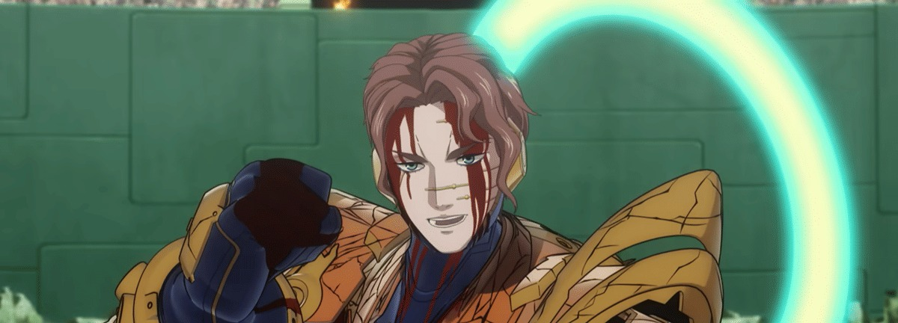

Super Automaton β
He tried to give the world free lightning, and the world billed him for it — so he came back to collect.

Super Automaton β
He tried to give the world free lightning, and the world billed him for it — so he came back to collect.
Feature map
Level-by-level features, as the figure refined them.
Vector-Locked Armor
Bonus action · 1 CE · 10 minutes.
All your voluntary movement must be straight-line Vectors of at least 10 feet — no curving. Broken Equation: if you are forcibly stopped before completing 10 feet, your speed is zeroed (and inside your Domain you lose 1 Acceleration Stage). Your attack profiles key off your final uninterrupted Vector length: PPP (10+ ft: +1d6 force); PPJ (20+ ft: Strength save or pushed 15 ft along the incoming Vector, and you follow 10 ft); PPB (30+ ft: prone, or drop a mundane item, or suppress reactions, or disadvantage on the next Str/Dex save); Maximum Velocity (40+ ft: 3d6 force rider + Strength save or push and prone; Overrun forces +10 ft of continuation).
Ground Fault
Reaction · PB times per long rest (trigger: your Broken Equation triggers).
Each creature within 10 feet makes a Dexterity save vs. your technique DC: 2d8 lightning on a failure, half on a success. (zack-delegated feature.)
Domain: Gematria Zone — Prison of the Gods
Action · 10 CE (8 CE at 18th) · ~32-ft cube.
Unlocks at 6th (per zack's ruling). A nonlethal rule-Domain with no lethal sure-hit: at initiative 20 it generates an Experiment from a d6 table; success advances your Acceleration Stage (0→II at 6–10; begins at II, cap IV at 11–17; begins at II with direct experiment choice, cap V at 18). Each Stage: +10 ft speed. Stage II — Tesla Step: preserve your Vector through one 90° turn (segments still ≥10 ft). Stage III: Vectors may run along walls, ceilings, and air-grids. Enemies may contest, body-block lanes, grapple, or trigger your Broken Equation — the counterplay is the point.
The d6 Experiment Table. The Protocol speaks: measure, isolate, discharge. Roll at initiative 20. Each trial is resolved by the single test named; success advances your Acceleration Stage by one. Enemies may contest however they can — body-block the lane, grapple, or force your Broken Equation — the counterplay is the point.
- 1 — Distance, “The Long Wire.” Measure the current’s patience. Two terminals ignite at opposite corners of the Zone. Complete a single unbroken Vector of 30+ ft ending within 5 ft of the far terminal, then make one DC 15 Constitution check to carry the charge the whole way. Success: the circuit closes.
- 2 — Angle, “The True Bend.” Isolate the corner. A spark must turn exactly. Make one Tesla Step — a single 90° turn, both segments ≥10 ft — then one DC 15 Dexterity (Acrobatics) check to keep the angle true. Success: the angle holds.
- 3 — Impact, “The Hammer Blow.” Discharge it. End a 20+ ft Vector with a strike: make one unarmed strike or Vector-collision attack against a creature or object at the Vector’s end. On a hit, the trial succeeds — the discharge lands.
- 4 — Circuit, “The Closed Loop.” Measure, isolate, discharge — in that order. Trace a full loop within one turn: four Vectors returning to your starting point, ending within 5 ft of where you began; then one DC 15 Intelligence check to keep the loop closed. Success: the current flows on.
- 5 — Boundary, “The Skin Effect.” Isolate the edge. Run the charge along the Zone’s skin: spend the turn with every Vector segment touching the Domain’s boundary (or a wall or ceiling once Stage III is reached), then one DC 15 Wisdom check to keep the charge off the interior. Success: the edge holds the current.
- 6 — Reversal, “The Alternating Current.” Discharge — then take it back. Complete one Vector, then immediately reverse along the same line back to your starting point, ending within 5 ft of it; one DC 15 Dexterity check to mirror the path exactly. Success: the current alternates.
(All six trial definitions and tests invented.)
Super Tesla Coils
3 coils per long rest (not restorable by CE, short rest, or RCT).
You carry 3 Super Tesla Coils. Tesla Warp (bonus action, 4 CE, 1 Coil): teleport to a coordinate you prepared at the end of a turn inside the Zone, preserving Vector continuity.
Acceleration Stage V
Passive.
Your Acceleration Stage cap becomes V: PB Tesla Steps per turn with 90° turns in 3D. Your Domain costs 8 CE.
Maximum, Domain, or equivalent.
Capstone material.
Gematria Zone — Prison of the Gods
A nonlethal rule-Domain: movement laws and the Experimental Protocol, no damage sure-hit. At initiative 20, an Experiment is generated; success advances Acceleration Stage. Tesla's priced exception: action-speed deployment at 10 CE.
The d6 Experiment Table. The Protocol speaks: measure, isolate, discharge. Roll at initiative 20. Each trial is resolved by the single test named; success advances your Acceleration Stage by one. Enemies may contest however they can — body-block the lane, grapple, or force your Broken Equation — the counterplay is the point.
- 1 — Distance, “The Long Wire.” Measure the current’s patience. Two terminals ignite at opposite corners of the Zone. Complete a single unbroken Vector of 30+ ft ending within 5 ft of the far terminal, then make one DC 15 Constitution check to carry the charge the whole way. Success: the circuit closes.
- 2 — Angle, “The True Bend.” Isolate the corner. A spark must turn exactly. Make one Tesla Step — a single 90° turn, both segments ≥10 ft — then one DC 15 Dexterity (Acrobatics) check to keep the angle true. Success: the angle holds.
- 3 — Impact, “The Hammer Blow.” Discharge it. End a 20+ ft Vector with a strike: make one unarmed strike or Vector-collision attack against a creature or object at the Vector’s end. On a hit, the trial succeeds — the discharge lands.
- 4 — Circuit, “The Closed Loop.” Measure, isolate, discharge — in that order. Trace a full loop within one turn: four Vectors returning to your starting point, ending within 5 ft of where you began; then one DC 15 Intelligence check to keep the loop closed. Success: the current flows on.
- 5 — Boundary, “The Skin Effect.” Isolate the edge. Run the charge along the Zone’s skin: spend the turn with every Vector segment touching the Domain’s boundary (or a wall or ceiling once Stage III is reached), then one DC 15 Wisdom check to keep the charge off the interior. Success: the edge holds the current.
- 6 — Reversal, “The Alternating Current.” Discharge — then take it back. Complete one Vector, then immediately reverse along the same line back to your starting point, ending within 5 ft of it; one DC 15 Dexterity check to mirror the path exactly. Success: the current alternates.
(All six trial definitions and tests invented.)
- Clash points
- 1000
- Burnout
- 3 rounds
- Duration
- 3 minutes
- Radius
- ~32-ft cube
- Activation ✦
- action
- CE cost ✦
- 10
✦ Canon: figure Domains are Specific Domains — the stated profile governs, not the player point-unlock table.
The Current Decides
Instead of grounding at your position, you may place the Ground Fault burst at any point within 60 feet of you — the current chooses its path — and you regain one expended Super Tesla Coil.
Build-defining options.
This technique grants Innate Technique Feats — hand-authored applications of the figure's art, available in the builder's feat picker when you select this technique.
Edge cases and shared systems.
Campaign canon notes